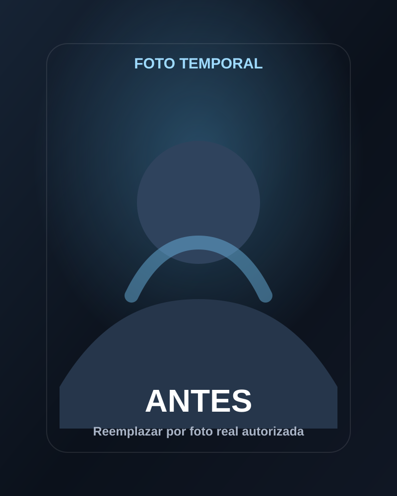
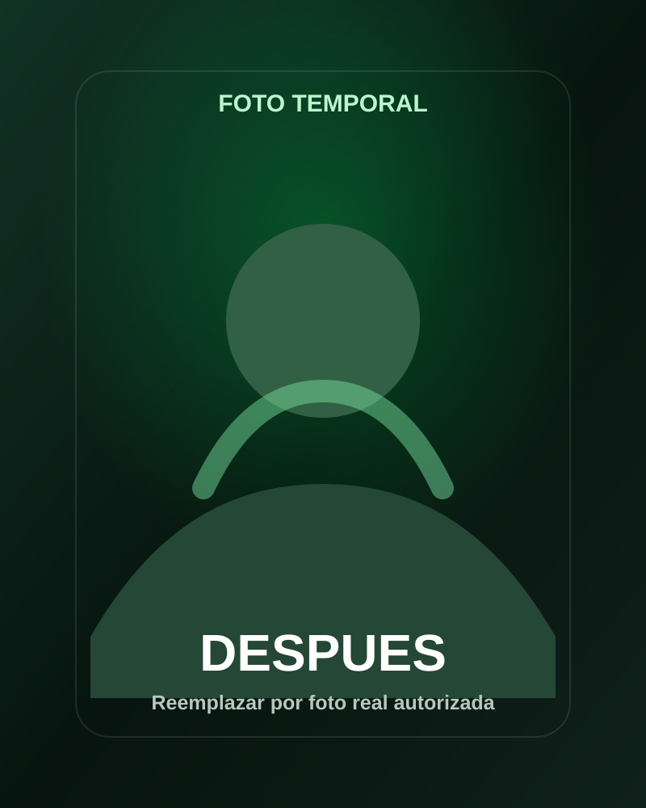

Antes y despues con permiso del cliente.
Resultados con acompanamiento
Historias reales de clientes que decidieron empezar mejor
Esta pagina esta preparada para mostrar avances con fotos de antes y despues, contexto del proceso, objetivo del cliente y productos usados. Las fotos finales se publican solo con autorizacion.


Cliente destacado
Progreso en 12 semanas
Ejemplo temporal hasta colocar fotos reales autorizadas.
Objetivo, tiempo, enfoque y productos usados.
Resultados honestos: cada cuerpo y rutina responde distinto.
Historia destacada
Un testimonio debe contar mas que una foto
La idea es que cada cliente entienda el contexto: que queria lograr, cuanto tiempo llevo, que cambio en su rutina y como Javy lo acompano.
Cliente Javy
Maria, proceso de recomposicion corporal
"Queria verme mejor, tener mas energia y aprender que suplementos me convenian. La asesoria me ayudo a comprar con mas seguridad."
- Objetivo
- Definicion y energia
- Tiempo
- 12 semanas
- Enfoque
- Entreno, nutricion y constancia
- Productos
- Proteina, creatina y vitaminas
Mas avances
Espacios listos para testimonios reales
Estas tarjetas quedan listas para reemplazar las imagenes temporales por fotos reales cuando el cliente las entregue.
Ganar masa muscular
Cliente en etapa de volumen controlado
Ideal para mostrar aumento de peso, fuerza y cambios visibles con una rutina constante y suplementos acordes.
Definicion
Cliente que busco bajar grasa y mantener rendimiento
Perfecto para explicar que el suplemento acompana el proceso, pero la constancia y la alimentacion llevan el mayor peso.
Estoy empezando
Cliente que compro con asesoria por primera vez
Caso util para mostrar confianza: que comprar, como usarlo y como evitar gastar en productos que no necesita.
Estructura recomendada
Que debe llevar cada testimonio
Esta guia ayuda a Javy a pedir la informacion correcta antes de publicar un resultado en la web.
Fotos antes y despues
Misma postura, buena luz y autorizacion clara del cliente.
Datos del proceso
Objetivo, tiempo, rutina general y cambios de habitos.
Productos usados
Lista sencilla de suplementos, sabor si aplica y uso recomendado.
Comentario del cliente
Una frase real que explique que le ayudo o que aprendio.